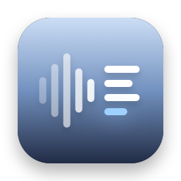
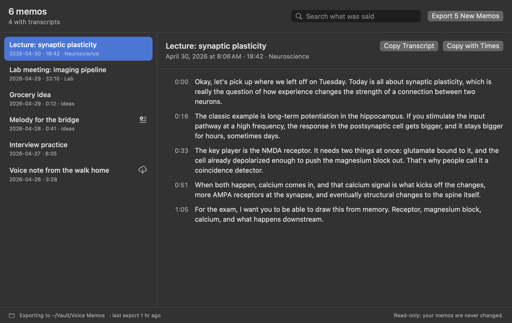

Memo Export
Every Voice Memos recording as Markdown with its audio, the transcript in paragraphs with timestamps. Ready for Obsidian, and only new memos each time.
Thanks for downloading! If it saves you some copying, a star on GitHub helps other people find it.
free · open source · macos 14+ · read-only · no internet access
What you get

- A note for every memo: title, date, length and folder, then the whole transcript in paragraphs, each starting with when it was said.
- The audio next to it: the original
.m4a, dated when you recorded it, and embedded so Obsidian plays it inside the note. - Only what's new: each run adds new memos and fills in transcripts that weren't ready, without touching notes you've edited.
- Search what was said across every memo, and copy any transcript with its paragraphs, which copying from Voice Memos loses.
- Extras: SRT subtitles, subfolders matching your Voice Memos folders, automatic export, and a
memo-exportcommand line tool.
What a note looks like
--- title: "Lecture: synaptic plasticity" date: 2026-04-30T09:41:00-05:00 duration: "18:42" folder: "Neuroscience" tags: - voice-memo --- # Lecture: synaptic plasticity ![[2026-04-30 Lecture synaptic plasticity.m4a]] **0:00** Okay, let's pick up where we left off on Tuesday. Today is all about synaptic plasticity… **0:16** The classic example is long-term potentiation in the hippocampus…
Questions
How do I export a transcript from Voice Memos?
Voice Memos only lets you copy a transcript one memo at a time, and the line breaks don't come with it. Memo Export exports all of them at once, each as a Markdown note in paragraphs with timestamps, next to the audio.
Can I send them to Obsidian?
Yes. Choose a folder inside your vault. Each note has front matter Obsidian reads as properties, a voice-memo tag, and an embed that plays the audio inside the note. Prefer another app? Switch to standard Markdown links.
Does it transcribe memos itself?
No. It exports the transcripts Voice Memos makes on your Mac, so your audio never goes anywhere. A memo without a transcript is still exported, and its note gets the words once Voice Memos has made them.
Why does it need Full Disk Access?
macOS keeps Voice Memos' recordings in a protected folder no other app can read without it. Memo Export's App Sandbox still limits it to that one folder, read-only, plus the export folder you choose. The details are in SECURITY.md.
Will it change or delete my memos?
No. It can only read Voice Memos, and it reads a copy of its database rather than the database itself. It never deletes anything, and never overwrites a note you've edited.